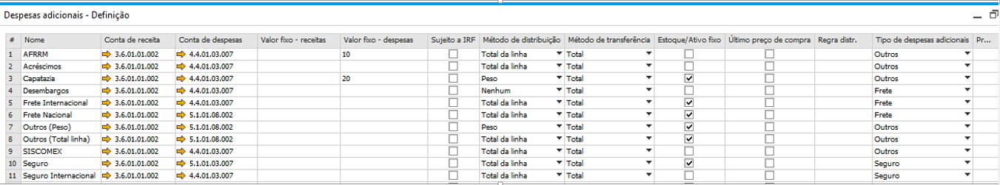
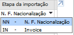

Despesas adicionais
Para acessar a tela de Despesas adicionais, é necessatio ir ao menu:
Admininstração -> Definição -> Geral -> Despesas adicionais
Despesas adicionais poderão ser configuradas para serem usadas ao calcular o rateio.
{kind=link}
Para definir quais serão as despesas adicionais, deve ser selecionada na coluna Despesas adicionais da linha uma das opções abaixo:

Para definir qual será o pagador padrão, deve ser selecionada na coluna Pagador padrão uma das opções abaixo (poderá ser alterado conforme a necessidade de cada processo diretamente na tela de processo de importação):

Não é possível inserir o mesmo tipo de despesa adicional para mais de uma linha. Caso o usuário tente inserir uma despesa adicional já utilizada, a seguinte mensagem será exibida:
{kind=link}
BR One :: Não é permitido duas despesas adicionais possuírem a mesma despesa adicional de linha.
Para definir quais despesas vão ser utilizadas no processo de NF Nacionalização ou no processo de Invoice, deverá ser selecionada uma das opções na coluna Etapa da importação:
{kind=link}
Não é possível configurar uma despesa como sendo da etapa Invoice e marcar a opção Considerar no fechamento numerário para ela.
Caso o usuário tente fazer isso, será exibida a seguinte mensagem de erro:
{kind=link}
BR One :: Linha [x] não pode ser considerada no fechamento numerário porque etapa é Invoice.
Todas as despesas utilizadas no processo de importação devem estar com esse flag Despesa de Importação marcado.
O campo de Despesas excluída do rateio serve para informar quais despesas deverão ser rateadas e serão excluídas de alguns rateios.
O campo Total MC menos Desp. Excluídas deverá ser selecionado somente se a despesas será rateada com base no Total MC menos o valor total das despesas que foram excluídas do rateio.
No Nível de Rateio deverá ser informado em qual nível será calculado o rateio das despesas, tendo opção de 5 níveis, obrigatório para etapa de Nacionalização que não estão com flag de Despesas excluída do rateio marcada.
Não será possível adicionar uma despesa que contenha o flag Despesas de importação, sem informar o nível quando a etapa de importação for NF de Nacionalização. Caso a despesa não possua o nível, ao tentar atualizar ou adicionar, a seguinte mensagem será exibida:

BR One :: Para despesas que possuem a flag Despesas de importação e Etapa de importação sejam N.F. Nacionalização é necessário definir o nível entre 1 e 5 para o cálculo do rateio.
Não será possível adicionar uma despesa que contenha o flag Despesa excluída do rateio caso o Método de distribuição for nenhum. Caso a despesa possua o Método de distribuição nenhum, ao tentar atualizar ou adicionar, a seguinte mensagem será exibida:
{kind=link}
BR One :: Não é possível selecionar Despesa excluída do rateio caso o Método de distribuição seja Nenhum.
Ao marcar a opção de Despesa excluída do rateio , é necessário que o nível de rateio seja Sem nível. Caso possua nível a seguinte mensagem será exibida:
{kind=link}
BR One :: Para despesas que possuem a flag Despesa excluída do rateio, é necessário que o nível de rateio seja Sem nível.
Somente será possível adicionar uma despesa que contenha o flag Total MC menos Desp. excluídas caso o Método de distribuição for igual a Total da linha. Caso a despesa possua o Método de distribuição diferente de Total da linha, ao tentar atualizar ou adicionar, a seguinte mensagem será exibida:

BR One :: Não é possível selecionar Total MC menos Desp. excluídas caso o Método de distribuição seja diferente de Total da linha.
Não será possível adicionar uma despesa que contenha o flag Total MC menos Desp. excluídas com a flag Despesa excluída do rateio marcada. Caso a despesa possua as duas flags marcadas, ao tentar atualizar ou adicionar, a seguinte mensagem será exibida:

BR One :: Não é possível selecionar Total MC menos Desp. excluídas caso a opção Despesa excluída do rateio esteja marcada.